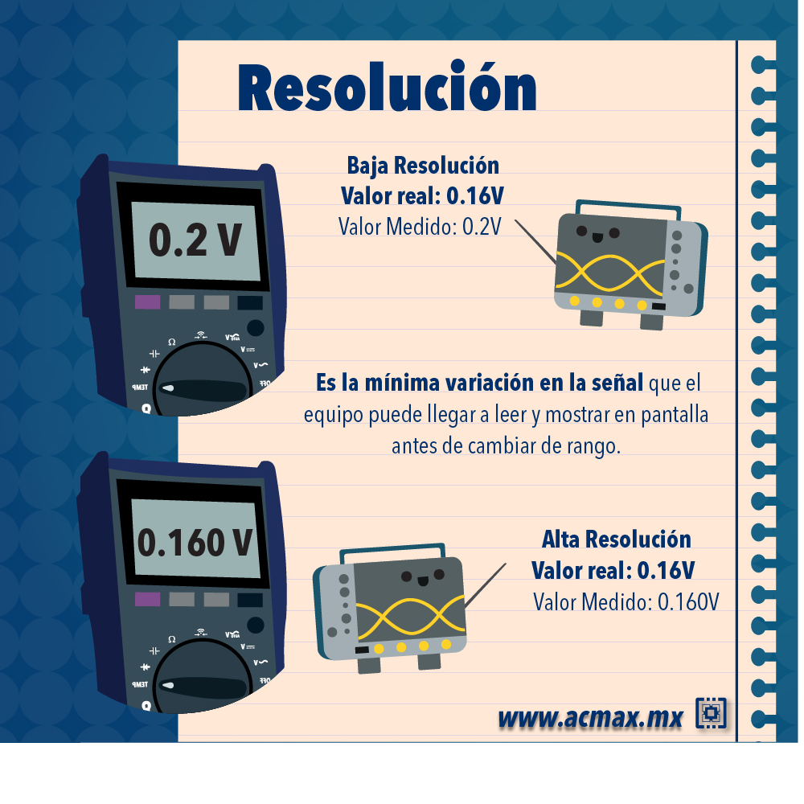

Introducción a la incertidumbre
Las fuentes potenciales de incertidumbre se investigan y, siempre que sea posible, el método se ajusta para reducir la incertidumbre a un nivel aceptable.
El parámetro que mide la incertidumbre puede ser, una desviación estándar (o un múltiplo de ésta) o la semiamplitud de un intervalo, con un nivel de confianza determinado.
La incertidumbre de medida puede ser evaluada a partir de la distribución estadística de los resultados de series de mediciones, y pueden caracterizarse por sus desviaciones estándar experimentales.
El conocimiento de la incertidumbre implica un aumento de la confianza en la validez del resultado de una medición.
Cada una de las contribuciones separadas a la incertidumbre es un componente de la incertidumbre. Cuando se expresa como desviación estándar se conoce como incertidumbre estándar.
Si hay correlación entre las componentes, se tiene en cuenta mediante la covarianza.
Resolución
Es la capacidad de un sistema o instrumento para detectar y mostrar cambios o variaciones pequeñas en una magnitud o medida. Es decir, es la mínima cantidad o el menor cambio que puede ser detectado y expresado por el sistema o el instrumento de medición.

Error
Diferencia entre un valor medido de una magnitud y un valor de referencia,

Errores experimentales
Error absoluto Diferencia entre el valor indicado por el instrumento \(A_i\) y el valor verdadero \(A_r\) de la magnitud medida.
\[E=A_i-A_r\]
Componentes del error
Se considera que un error tiene dos componentes, llamadas componente aleatoria y componente sistemática
Error sistemático
- Los efectos que cambian sistemáticamente en magnitud durante series de análisis, dan lugar a errores sistemáticos que no son constantes.
## -- Attaching core tidyverse packages ------------------------ tidyverse 2.0.0 --
## v dplyr 1.1.2 v readr 2.1.4
## v forcats 1.0.0 v stringr 1.4.0
## v ggplot2 3.4.4 v tibble 3.2.1
## v lubridate 1.9.2 v tidyr 1.3.0
## v purrr 1.0.1
## -- Conflicts ------------------------------------------ tidyverse_conflicts() --
## x dplyr::filter() masks stats::filter()
## x dplyr::lag() masks stats::lag()
## i Use the conflicted package (<http://conflicted.r-lib.org/>) to force all conflicts to become errors
##
## Attaching package: 'kableExtra'
##
##
## The following object is masked from 'package:dplyr':
##
## group_rows| Descripción | Error aleatorio | Error sistemático |
|---|---|---|
| Causa |
|
|
|
|
|
|
|
|
|
||
| ___________________________________ | _____________________ | __________________________ |
| Disminuye al aumentar el tamaño del estudio | Si | No |
| ___________________________________ | _____________________ | __________________________ |
| Afectación | Presición | Validez |
| ___________________________________ | _____________________ | __________________________ |
| Medida | \[A_i- media (A_i) \] | \[media(A_i)-A_i\] |
Identificación de fuentes de incertidumbre
Listar todas las posibles fuentes de incertidumbre, incluye:
De los parámetros,
De las suposiciones químicas.
Por las condiciones ambientales
Por la repitibilidad de las medidas
Por la exactitud y resolución del equipo
Procedimientos para formar una lista estructurada
Principios del enfoque La estrategia tiene dos fases:
mediante un diagrama de causa-efecto (conocido como Ishikawa o diagrama “espina de pescado), identifique los efectos sobre un resultado.
Simplifique y resuelva duplicaciones
La lista inicial se depura para simplificar su presentación final y asegurar que los efectos no se han duplicado innecesariamente.
Análisis causa-efecto
El procedimiento empleado es el siguiente:
- Escribir la ecuación completa para el resultado.
Los parámetros de la ecuación forman las ramas principales del diagrama. Casi siempre, o cuando resulte apropiado, es necesario añadir una rama principal que representa una corrección nominal de sesgo global, en relación con la recuperación.
Considerar cada etapa del método y añadir los factores necesarios al diagrama, desde los efectos principales hacia afuera. Los ejemplos incluyen efectos de la matriz y ambientales.
Para cada rama, añadir factores que contribuyan hasta que sus efectos sobre el resultado sean insignificantes.
Resolver las duplicaciones y repetir el proceso para clarificar las contribuciones y agrupar las contribuciones para cada grupo. Es conveniente agrupar en esta fase los términos relacionados con la precisión en una rama independiente.
La etapa final del análisis causa-efecto requiere una aclaración adicional. Las duplicaciones aparecen de forma natural al detallar por separado las contribuciones para cada parámetro de entrada. Por ejemplo, está siempre presente un elemento de variabilidad entre series de análisis, al menos nominalmente, para cualquier factor de influencia; estos efectos contribuyen a la variación global del método considerada como un todo, por lo que no deben añadirse por separado si ya se han tenido en cuenta.
Del mismo modo, es común encontrar el mismo equipo usado como instrumento de pesaje, lo que puede llevar a considerar varias veces su incertidumbre de calibración. Estas consideraciones nos llevan a las siguientes reglas adicionales para el perfeccionamiento del diagrama (aunque se aplican igualmente a cualquier lista estructurada de efectos):
Efectos que se compensan: eliminar todos. Por ejemplo, en una pesada por diferencia, se determinan las dos masas, ambas influenciadas por ‘sesgo cero’ de la balanza. La compensación del cero se eliminará de la pesada por diferencia, y se puede descartar de las ramas de las pesadas independientes.
Efecto similar, mismo tiempo: combinar en una única variable de entrada. Por ejemplo, la variación entre series de muchas variables de entrada puede combinarse en una única rama de precisión intermedia. Hay que ser cautos; concretamente, la variabilidad en las operaciones realizadas individualmente para cada determinación se pueden combinar, en tanto que la variabilidad en las operaciones llevadas a cabo en lotes completos (como la calibración de instrumentos) sólo será observable en la precisión entre-lotes.
Casos diferentes: renombrar. Es habitual encontrar efectos con la misma denominación que en realidad se refieren a casos diferentes de medidas similares. Estas deben distinguirse claramente antes de continuar.
Esta forma de análisis no conduce a listas estructuradas únicas. En este ejemplo, la temperatura puede considerarse con un efecto directo sobre la densidad a medir, o indirecto sobre la masa medida del material contenido en el picnómetro; o bien podría constituir la estructura inicial. En la práctica esto no afecta a la utilidad del método. Siempre que todos los efectos significativos aparezcan una vez, la metodología global será eficaz.
Una vez se ha completado el análisis causa-efecto puede ser adecuado volver a la ecuación original y añadir nuevos términos (como por ejemplo la temperatura).
Ejemplo
D.4.1 El procedimiento se ilustra por referencia a una medida simplificada y directa de densidad. Considerar el caso de la determinación directa de la densidad de etanol d(EtOH) mediante pesada de un volumen conocido V en un recipiente volumétrico adecuado de tara mtara y peso bruto incluido etanol mbruto. La densidad se calcula a partir de d(EtOH)=(mbruto - mtara)/V Para mayor claridad, solo se tienen en cuenta tres efectos: la calibración del equipo, la temperatura y la precisión de las medidas. Las Figuras D1-D3 ilustran gráficamente el proceso. D.4.2 Un diagrama causa-efecto consiste en una estructura jerarquizada que termina en una única salida. Para nuestro objetivo, esta salida es un resultado analítico concreto (‘d(EtOH)’ en la Figura D1). Las ramas principales del resultado son los efectos contributivos, que incluyen tanto los resultados de medidas intermedias concretas como otros factores, tales como efectos de matriz o ambientales. Cada rama a su vez puede tener efectos contributivos adicionales. Estos ‘efectos’ comprenden todos los factores que afectan al resultado, ya sean variables o constantes; las incertidumbres de estos efectos contribuyen claramente sobre la incertidumbre del resultado. D.4.3 La Figura D1 muestra un posible diagrama obtenido directamente por aplicación de las etapas 1-3. Las ramas principales son los parámetros en la ecuación, y cada efecto está representado mediante ramas secundarias. Hay que tener en cuenta que hay dos efectos ‘temperatura’, tres efectos ‘precisión’ y tres efectos ‘calibración’. D.4.4 La Figura D2 representa los efectos de precisión y temperatura agrupados siguiendo la segunda regla (mismo efecto/tiempo); la temperatura puede ser tratada como un único efecto sobre la densidad, mientras que las variaciones individuales en cada determinación contribuyen a la variación observada en la replicación de todo el método. D.4.5 El sesgo en la calibración de las dos pesadas se anula, y puede eliminarse (Figura D3) siguiendo la primera regla (eliminación). D.4.6 Finalmente, las ramas ‘calibración’ restantes deberían distinguirse como dos contribuciones (diferentes) debido a posible no linealidad en la respuesta de la balanza, junto con la incertidumbre de calibración asociada con la determinación volumétrica.
## Linking to librsvg 2.48.8
Fuentes de incertidumbre en las medidas
This is a normal paragraph:
This is a code block.